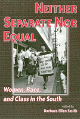

The diverse lives of contemporary Southern women
The diverse lives of contemporary Southern women


 The diverse lives of contemporary Southern women
The diverse lives of contemporary Southern women

|  |
Neither Separate Nor EqualWomen, Race, and Class in the Southedited by Barbara Ellen Smithpaper EAN: 978-1-56639-680-6 (ISBN: 1-56639-680-8) |
"This collection of thirteen essays about women in the contemporary south offers a heartening example of social science informed by an appreciation of history."
—Journal of Southern History
When she began work on this collection, Barbara Ellen Smith was asked, "Why work on a book about women in the South? Nobody writes books about women in the Midwest." In an era of intensified globalization, when populations, cultures, and capital move across the boundaries of nation-states in multiple forms and directions, the concept of a subnational region seems parochial and out-of-date. "But," Smith argues, "it is precisely because of the historical construction of the secessionist South as an embattled region when all manners of social problems tend to be blamed on poor women and children and those whose skin is anything but white, that the experiences of racially diverse women in a region legendary for both white supremacy and male supremacy are important to explore."
Collecting in one volume the work of such well-known scholars on Appalachia and the South as Carol Stack, Mab Segrest, and Sally Maggard, among others, Neither Separate Nor Equal analyzes the complex and dramatic developments in the lives of contemporary Southern women. Case studies vividly portray women's diverse circumstances and activities from rural African American women in the Mississippi Delta taking on new roles as community builders to female textile workers in North Carolina contending with automation and reorganization of the mills.
Focusing on the South's historical legacies as they are manifested and contested in the lives of women today, including the tensions between long-lasting patterns of regional distinctiveness and the disruptions of globalizations, this collection approaches differences of race and class not as forms of separation among women, but as social—be they often contentious, difficult, or exploitative—relationships. Unifying around a theme of relationality, Neither Separate Nor Equal offers searching empirical studies of Southern women and a conceptual model for feminist scholarship as a whole.
Read a review from Contemporary Sociology, Volume 29.6 (November 2000), written by Marina Karides (pdf).
"...a coherent volume that should interest many historians. ...Many articles from this accessible collection could be assigned to good effect at the beginning or end of undergraduate courses in southern history..."
—Journal of Southern History
Acknowledgments
Introduction
Part I: Engendering History
1. The Social Relations of Southern Women – Barbara Ellen Smith
2. Transgressions in Race and Place: The Ubiquitous Native Grandmother in America's Cultural Memory – Darlene Wilson and Patricia D. Beaver
3. "A Good Ol' Woman": Relations of Race and Gender in an Indian Community – Patricia B. Lerch
Part II: Making a Living
4. Race, Class, and Intimacy in Southern Households: Relationships Between Black Domestic Workers and White Employers – Mahnaz Kousha
5. Women, Restructuring, and Textiles: The Increasing Complexity of Subordination and Struggle in a Southern Community – Cynthia D. Anderson and Michael D. Schulman
6. A Coalfield Tapestry: Weaving the Socioeconomic Fabric of Women's Lives – Ann M. Oberhauser and Anne-Marie Turnage
Part III: Sustaining Communities
7. Finding a Voice: Latinas in the South – Lorida C. Velázquez
8. Doing Good While Doing Well: Professional Black Women in the Mississippi Delta – Cynthia M. Duncan, Margaret M. Walsh, and Gemma Beckley
9. Holding Hands: An American Stuggle for Community – Carol Stack
10. Women and Revolutionary Relations; Community-Building in Appalachia – Monica Kelly Appleby
Part IV: Changing Possibilities in the Global South
11. Gender, Race and Place: Confounding Labor Activism in Central Appalachia – Sally Ward Maggard
12. Southern Women and Southern Borders on the Move: Tennessee Workers Explore the New International Division of Labor – Fran Ansley and Susan Williams
13. What's Sex Got to Do with It, Y'All? – Mab Segrest
About the Contributors
Index
 | Barbara Ellen Smith is Director of the Center for Research on Women and Associate Professor of Sociology at The University of Memphis. |
Women's Studies
Race and Ethnicity
African American Studies
Women in the Political Economy, edited by Ronnie J. Steinberg.
No longer active.
Women in the Political Economy, edited by Ronnie J. Steinberg, includes books on women and issues of work, family, social movements, politics, feminism, and empowerment. It emphasizes women's roles in society and the social construction of gender and also explores current policy issues like comparable worth, international development, job training, and parental leave.
© 2015 Temple University. All Rights Reserved. This page: http://www.temple.edu/tempress/titles/1394_reg.html.